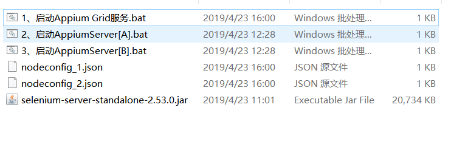
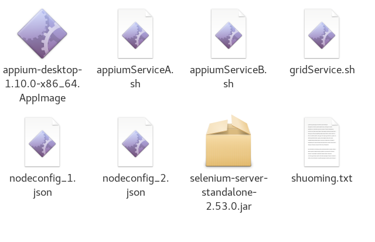
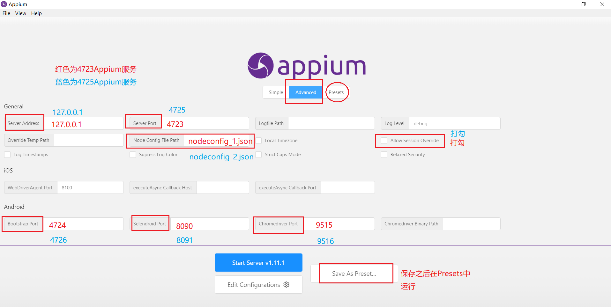

11.5、并行测试
1、对框架进一步改进，使其实现并行测试，由于物理机资源有限，暂时只进行两台安卓设备并行测试。
对SelectDriver.java进行修改，增加设备udid的获取与自动设置。
以selenium-server-standalone为支撑，由selenium-grid分配测试。
利用testng进行xml传参，设置测试用例执行机的udid，实现并行测试。
2、windos下并行测试bat脚本编写
运行顺序Grid-》appiumA,appiumB

2.1、启动AppiumGrid服务
@echo off
echo 正在启动Appium grid服务，请稍等。
echo 启动完毕之后，请不要关闭此窗口。
echo 当你看到"Selenium Grid hub is up and running"则表示启动成功。
java -jar selenium-server-standalone-2.53.0.jar -role hub -port 4444
2.2、启动AppiumServer[A]
@echo off
echo 启动appium server中，请不要关闭此窗口。
appium -a 127.0.0.1 -p 4723 -bp 4724 --selendroid-port 8090 --chrom edriver-port 9515 --session-override --nodeconfig nodeconfig_1.json
2.3、启动AppiumServer[B]
@echo off
echo 启动appium server中，请不要关闭此窗口。
appium -a 127.0.0.1 -p 4725 -bp 4726 --selendroid-port 8091 --chromedriver-port 9516 --session-override --nodeconfig nodeconfig_2.json
2.4、nodeconfig_1.json
{
"capabilities":
[
{
"browserName": "zuk",
"version":"6.0.1",
"maxInstances": 1,
"platform":"WINDOWS"
}
],
"configuration":
{
"cleanUpCycle":2000,
"timeout":30000,
"proxy": "org.openqa.grid.selenium.proxy.DefaultRemoteProxy",
"url":"http://127.0.0.1:4723/wd/hub",
"host": "127.0.0.1",
"port": 4723,
"maxSession": 1,
"register": true,
"registerCycle": 5000,
"hubPort": 4444,
"hubHost": "127.0.0.1"
}
}
2.5、nodeconfig_2.json
{
"capabilities":
[
{
"browserName": "redmi",
"version":"6.0.1",
"maxInstances": 1,
"platform":"WINDOWS"
}
],
"configuration":
{
"cleanUpCycle":2000,
"timeout":30000,
"proxy": "org.openqa.grid.selenium.proxy.DefaultRemoteProxy",
"url":"http://127.0.0.1:4725/wd/hub",
"host": "127.0.0.1",
"port": 4725,
"maxSession": 1,
"register": true,
"registerCycle": 5000,
"hubPort": 4444,
"hubHost": "127.0.0.1"
}
}
3、linux下shell脚本编写
其中nodeconfig_1.json和nodeconfig_2.json内容不变

3.1、appiumServiceA.sh
*#!/bin/bash*
echo 启动appium server中，请不要关闭此窗口。
./appium-desktop-1.10.0-x86_64.AppImage -a 127.0.0.1 -p 4723 -bp 4724 --selendroid-port 8090 --chrom edriver-port 9515 --session-override --nodeconfig nodeconfig_1.json
3.2、appiumServiceB.sh
*#!/bin/bash*
echo 启动appium server中，请不要关闭此窗口。
./appium-desktop-1.10.0-x86_64.AppImage -a 127.0.0.1 -p 4725 -bp 4726 --selendroid-port 8091 --chromedriver-port 9516 --session-override --nodeconfig nodeconfig_2.json
3.3、gridService.sh
*#!/bin/bash*
echo 正在启动Appium grid服务，请稍等。
echo 启动完毕之后，请不要关闭此窗口。
echo 当你看到"Selenium Grid hub is up and running"则表示启动成功。
java -jar selenium-server-standalone-2.53.0.jar -role hub -port 4444
3.4、shuoming.txt，方便复制开启服务
./gridService.sh
./appiumServiceA.sh
./appiumServiceB.sh
4、快速上手
4.1、开启服务配置
由于windos和centos都安装的是桌面版appium，所以配置参数部分都在appium中配置，即配置脚本中4723和4725两个appium服务，并设置，

图中直接设置了node配置为nodeconfig_1.json和nodeconfig_2.json是因为通过脚本打开时Appium面板时自动读取到脚本中nodeconfig设置，故不需配置路径。
运行时，先启动Grid脚本，再启动appiumA,appiumB两个脚本，然后会自动打开桌面版appium两个窗口，选择保存好的4723和4725两个appium服务依次启动。必须是脚本启动面板，点击运行两个Appium服务才可以
即可进行测试。
说明：设备名称在nodeconfig_1.json和nodeconfig_2.json中配置
"browserName": "zuk",
"browserName": "redmi"
设备udid获取
adb devices
设备的udid在testng.xml中需要运行的测试用例下配置，如
<test name="管理员界面切换" preserve-order="true">
<parameter name="udid" value="113a20777d33"/>
<parameter name="deviceName" value="redmi"/>
<packages>
<package name="com.xiaolanyun.appium.DataTest.testCase.RootNavigation" />
</packages>
</test>
<test name="管理员登陆添加买家卖家账户并购买商品发货" preserve-order="true">
<parameter name="udid" value="63a7b810"/>
<parameter name="deviceName" value="zuk"/>
<packages>
<package name="com.xiaolanyun.appium.DataTest.testCase.RootAddUserAndBuyGoods" />
</packages>
</test>
4.2、测试用例编写顺序，格式参照Appium测试框架。
4.3、增加测试设备
相应的按照格式增加nodeconfig配置文件，按照格式编写Appium启动脚本，增加Appium面版服务配置，进行testng.xml中的测试用例设备udid分配。